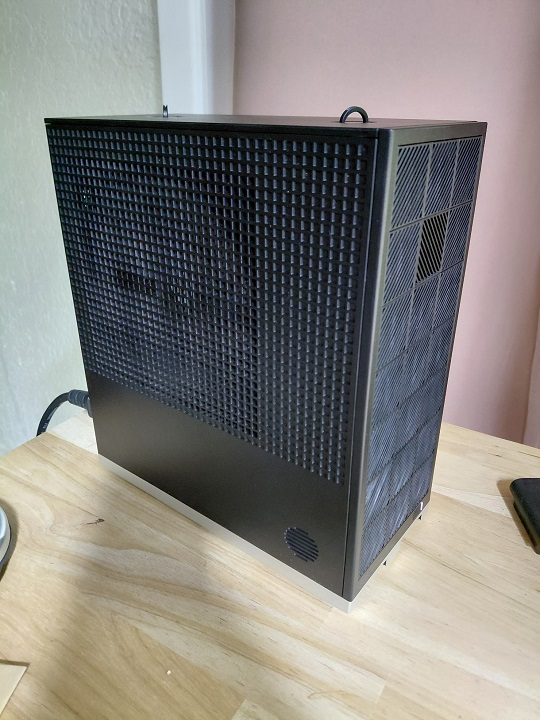
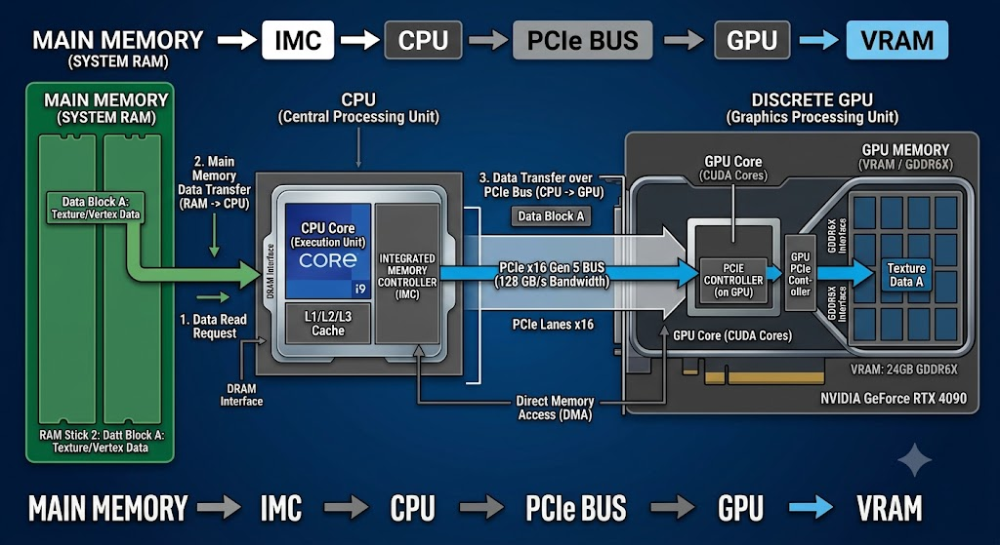
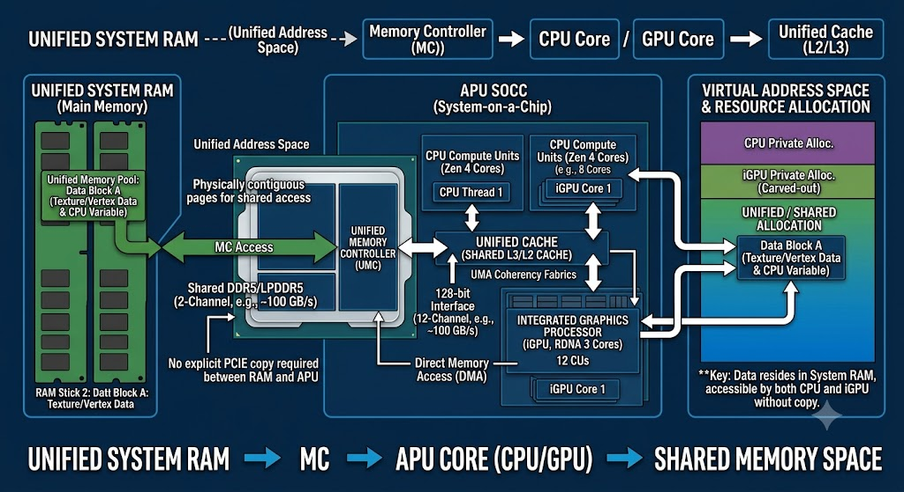

There is now a CUDA version of this guide, based on the ASUS GX10: Building a Private AI Server — ASUS Ascent GX10.
This isn't another "install Ubuntu and run ollama" guide.
The goal of this project was to build a machine that can run one of the largest openly available language models
completely locally, while remaining understandable, maintainable, and "reasonably" inexpensive.
The finished system is a headless Linux server built around AMD's Ryzen AI Max+ 395 (Strix Halo) with 128 GB of unified memory. It runs DeepSeek V4 Flash using antirez's DS4 inference engine and exposes an OpenAI-compatible API to local development tools. This guide aims to explain the how and why of each design decision.
Total build cost: $3,870 before tax
I've spent nearly thirty years writing software, sometimes professionally. During the past year I've gone from dismissing LLMs as unreliable code generators to using them daily for research, code generation, debugging, documentation, and automation. The productivity gains for me are real, but consuming these models through cloud APIs has some problems for me:
Local inference removes most of those problems with some obvious downsides:
This is also a learning experience for me. I'm not really concerned with all dimensions of efficiency.
My ideal upgrade process looks like this:
ssh server
cd software
git pull
make
systemctl restart software
Here's what I'm not considering: safety, security, local privacy.
The end product will be open to anyone on your lan, documents and responses will be sent without encryption.
This is only "how to get it working" guide. There are a lot of other concerns that should cater to your particular needs and environment.
| System | CPU Arch | Memory Type | GPU Stack | Key Pros | Key Cons |
|---|---|---|---|---|---|
| Framework Desktop | x86-64 (AMD Strix Halo) | LPDDR5 (128 GB) | ROCm | Open ecosystem, x86-64, available | DIY |
| Mac Studio | M3 or M4 ARM | (128 GB) | Metal | Excellent bandwidth | Nearly impossible to find with 128 GB RAM |
| Nvidia DGX Spark | ARM | LPDDR5 (128 GB) | CUDA | Mature AI stack | ARM-only, proprietary, more expensive |
The AMD Ryzen AI Halo (basically the same thing as the Framework) was not shipping when I made my purchase.
After looking at cost and availability, I chose the Framework.
Picture of the winner

x86-64 - it can run almost any software and has long-term maintainability. Plus, I can easily repurpose it, if this whole experiment fails.
ROCm - AMD's "AI" stack is "open". The software libraries and tools are available, and future support looks good.
128 GB unified LPDDR5 - This is the magic part. This much high-bandwidth ram makes it well suited for LLMs. It fits 20B models (~90 GB) with 32GB+ leftover for KV cache, disk cache, and OS overhead.
Excellent memory bandwidth - 123 GB/s bidirectional peak
Power usage - 100 Watts under load
I chose the Framework Desktop because it offered the best combination of unified memory capacity, x86 compatibility, an open software stack, and long-term flexibility.
Running local models is a game of memory ceilings:
| Model Size | Example | Fits in 128 GB? | Fits in 32 GB? | Fits in 16 GB? |
|---|---|---|---|---|
| 7B (Q4) | Llama 3 8B | ✓ | ✓ | ✓ |
| 14B (Q4) | Qwen 2.5 14B | ✓ | ✓ | ? |
| 32B (Q8) | Qwen 3 32B | ✓ | ✗ | ✗ |
| 70B (Q4) | Llama 2 70B | ✓ | ✗ | ✗ |
| 90+ GB MoE (2/8 bit) | DeepSeek V4 Flash | Yes | ✗ | ✗ |
128 GB is the threshold where full-size frontier-class models become feasible on a single consumer-priced machine. Below that, you're limited to distilled or heavily quantized models.
If I find myself limited by 128GB, I have the option to buy another one and run a high-speed link between the two (e.g. Thunderbolt 4). This dream will likely only come true when RAM prices are reasonable again.
If you only run 7B models: Use a discrete GPU.
If you need many concurrent users: multiple GPUs is simpler.
If you just want a chat bot: find a small model that runs on hardware you already have.
This is the architectural feature that makes the entire project possible. Consider how data is copied in a traditional discrete GPU setup.
The memory on the GPU is fast, but limited to 24GB. For a modest sized model, every inference step requires copying data over the PCIe bus. The model weights, KV cache, and intermediate activations all compete the same VRAM. Maintaining the same level of performance with larger models requires multiple GPUs.

In a unified memory architecture, the CPU and GPU share the same physical memory controller. The GPU can allocate memory directly from the system pool using HSA (Heterogeneous System Architecture). This means:

The tradeoff is bandwidth. Discrete GPUs use ultra-wide GDDR buses. A RTX 4090 cand do 1,000+ GB/s (unidirectional). Strix Halo peaks at 123 GB/s bidirectional. For prompt processing (parallel and bandwidth-limited), discrete GPUs win. For large context generation (sequential and latency-sensitive), the unified memory advantage of zero-copy access closes the gap considerably.
Flash storage is usually graded by sequential write speed. A fast NVMe drive can hit 7500 MB/s. Modern
high-context LLM engines can treat disk as a dynamic cache tier, continuously reading and writing KV history
states during long sessions. For the software I'm interested in, the KV persistence layer is limited by
random IO. Sequential throughput is nice when loading models, but the runtime limitation is
random read/writes. This makes the value of an on-drive DRAM cache substantial.
Budget NVMe drives (WD Blue SN580, Samsung 990 EVO Plus) rely on Host Memory Buffer (HMB) or skip cache pools
entirely. Under sustained multi-threaded writes, their SLC caches exhaust and performance collapses.
| Drive | Cache | Random Read (IOPS) | Random Write (IOPS) | Sustained Load Behavior |
|---|---|---|---|---|
| WD Blue SN580 | HMB | 600K | 750K | SLC cache exhaustion; write throttling |
| Samsung 990 EVO Plus | HMB | 900K | 950K | IOPS collapse under asynchronous queue depth |
| WD Black SN850X | DDR4 | 1,000K | 1,100K | Stable, sustained multi-threaded performance |
| Samsung 990 Pro 2TB | LPDDR4 | 1,400K | 1,550K | Maximum sustained throughput; deterministic IOPS |
Samsung 990 Pro 2TB. It carries a dedicated LPDDR4 DRAM cache and delivers up to 1,400,000 read / 1,550,000 write random IOPS. This keeps token processing fluid even during large context operations.
The Framework comes out of the box, almost ready to go. Before we install the OS, we need to fix some things in the BIOS. Press F2 and change the following
This will prevent any "unofficial" OS from booting. Disable that so we can install what we want.
This might seem counter-intuitive, but you want to minimize the amount of memory dedicated to the GPU in the
BIOS. ROCm allocates unified memory dynamically through HSA. All memory allocations go through the kernel.
Recommended setting: 512 MB (minimum).
A great OS doesn't do things you don't want. The choice depends on how much control you need and how much maintenance you're willing to accept. I know linux and it has pretty low overhead. Based on previous life experience I considered the following options.
Fedora - recent kernel and libs, but major upgrades and custom system libs are a pain.
Debian - stable, predictable, minimal surprises, easy to maintain for years. Package can lag behind.
Ubuntu - Debian with extra stuff.
Gentoo - I already know this one. I get to pick my init, kernel. Makes it easier to pin libraries and resolve conflicts.
I chose Gentoo to annoy people, and I can make it work exactly how I want. Debian, Fedora or most other distros would work with minor adjustments. I'm only going to go in to detail for the aspects of the OS install that may have an impact.
Space for efi, 8GB of swap, and the rest for everything else. All the disk usage will go to models and cache.
Lets go with:
/dev/nvme0n1p1 1G EFI System
/dev/nvme0n1p2 8G Linux swap
/dev/nvme0n1p3 1.8T Linux filesystem
When all 16 cores are processing inference or concurrent agent scripts, filesystem metadata contention can become
a real bottleneck. Under heavy parallel metadata workloads, XFS generally scales better than ext4. I love ZFS, but
it is RAM-hungry. I want that RAM to go to inference, not ARC.
XFS partitions are collected into independent allocation groups (AGs), allowing parallel read/write queues to
write metadata concurrently without waiting for a master lock.
mkfs.xfs -s size=4096 -b size=4096 -c options=/usr/share/xfsprogs/mkfs/lts_6.18.conf /dev/nvme0n1p3
The config file contains the following:
[metadata]
bigtime=1
crc=1
finobt=1
inobtcount=1
metadir=0
reflink=1
rmapbt=1
[inode]
sparse=1
nrext64=1
exchange=1
[naming]
parent=1
I have the choice of "init" and 32-bit compatibility. I know systemd, and it does everything I need, so I'll go with that. I don't see myself needing to run 32-bit code on this machine, so I'll skip the multi-lib compatibility.
This defines how things should be build, and with what optional functionality.
COMMON_FLAGS="-march=native -O2 -pipe"
CFLAGS="${COMMON_FLAGS}"
CXXFLAGS="${COMMON_FLAGS}"
FCFLAGS="${COMMON_FLAGS}"
FFLAGS="${COMMON_FLAGS}"
RUSTFLAGS="${RUSTFLAGS} -C target-cpu=native"
MAKEOPTS="-j32"
USE="llvm clang threads python ssl zstd lz4 aio acl unicode kernel-install kmod openssl resolvconf -X -wayland -opengl -gtk -qt6 -kde -gnome -pulseaudio -perl" # Mostly disabling GUI features
AMDGPU_TARGETS="gfx1151" # The chipset for our machine
GRUB_PLATFORMS="efi-64"
LC_MESSAGES=C.UTF-8
PYTHON_SINGLE_TARGET="python3_13"
PYTHON_TARGETS="python3_13"
For the Gentoo system profile, I'm running amd64 23.0 no-multilib systemd (stable)
Specifying the CPU Flags to use: /etc/portage/package.use/cpu-flags
*/* CPU_FLAGS_X86: aes avx avx2 avx512_bf16 avx512_bitalg avx512_vbmi2 avx512_vnni avx512_vp2intersect avx512_vpopcntdq avx512bw avx512cd avx512dq avx512f avx512ifma avx512vbmi avx512vl avx_vnni bmi1 bmi2 f16c fma3 mmx mmxext pclmul popcnt rdrand sha sse sse2 sse3 sse4_1 sse4_2 sse4a ssse3 vpclmulqdq
Specifying GPUs to support
/etc/portage/package.use/gpu
*/* VIDEO_CARDS: -* amdgpu radeonsi
Dependency versioning
/etc/portage/package.use/hip
>=media-libs/libglvnd-1.7.0 X
This left me with 89 packages to download and build. Downloading took 89 seconds. Build took
16m46s.
Accept some licences ** /etc/portage/package.license **
# Accepting the license for linux-firmware
sys-kernel/linux-firmware linux-fw-redistributable
# Accepting any license that permits redistribution
sys-kernel/linux-firmware @BINARY-REDISTRIBUTABLE
Dracut builds init for our custom kernel
/etc/portage/package.use/kernel
sys-kernel/installkernel dracut
Basic system tools: - 7m39
app-text/vim
bash-completion
app-admin/sudo
app-editors/vim
app-portage/gentoolkit
dev-python/pip
dev-vcs/git
net-misc/dhcpcd
sys-apps/portage
sys-apps/systemd
sys-boot/grub
sys-fs/dosfstools
sys-fs/ntfs3g
sys-fs/xfsprogs
sys-kernel/gentoo-sources
sys-kernel/linux-firmware
sys-process/time
Nice to have - 4m50
app-misc/screen
app-shells/bash-completion
app-text/tree
sys-apps/moreutils
sys-apps/the_silver_searcher
sys-process/btop
Rebuilding considering new flags and dependencies took 29m15
emerge -UND @world
AMD frequently releases firmware updates that improve GPU stability, power management, and hardware enablement.
Install linux-firmware and kernel sources:
emerge -a sys-kernel/linux-firmware sys-kernel/gentoo-sources
Build the kernel:
cd /usr/src/linux
make clean
Add the following to the config
# Kernel config targets:
CONFIG_DRM_AMDGPU=m # build amdgpu as a module
CONFIG_HSA_AMD=y # enable HSA for ROCm
CONFIG_HSA_AMD_SVM=y # shared virtual memory
CONFIG_IOMMU_SUPPORT=y
CONFIG_HUGETLBFS=y
This will validate the config
make oldconfig
Compile, takes about 3 minutes
make -j32
make modules_install
make install
Note:
Build amdgpu as a module (=m). Compiling it directly into the kernel
causes firmware initialization to happen before firmware files are available. Building as a module resolves this -
the module loads after firmware files are accessible.
These parameters showed benefit in my testing. Further research is warranted.
From /etc/default.grub
GRUB_CMDLINE_LINUX="amdgpu.gttsize=126976 ttm.pages_limit=32505856 ttm.page_pool_size=32505856 amdgpu.vm_fragment_size=9"
Parameter breakdown:
amdgpu.gttsize - Set the size of the "Graphics Translation Table" 124 GB (in MB).
ttm.pages_limit - Number of (4k) pages to allocate for the ram: 124G / 4k
ttm.page_pool_size - Size of the "cache" in pages (same as ttm.pages_limit)
amdgpu.vm_fragment_size - Pages are put into big "fragments". 2**N * 4KB == 2MB (huge pages)
This leaves ~4 GB for the OS and DS4.
dracut --force --kver "$(make kernelrelease)"
grub-mkconfig -o /boot/grub/grub.cfg
grub-install --efi-directory=/efi
REBOOT
Lets verify the kernel and userspace tools are happy with the GPU:
# Check IOMMU and GPU
$ dmesg | grep -E "IOMMU|GPU"
[ 0.448835] pci 0000:00:00.2: AMD-Vi: IOMMU performance counters supported
[ 0.460690] perf/amd_iommu: Detected AMD IOMMU #0 (2 banks, 4 counters/bank).
[ 5.989264] amdgpu: Virtual CRAT table created for GPU
[ 5.990104] amdgpu: Topology: Add dGPU node [0x1586:0x1002]
These are the libs and tools for the GPU.
For gentoo, most of the dev packages are masked, this explicitly allows their install.
/etc/portage/package.accept_keywords/rocm
dev-build/rocm-cmake ~amd64
dev-libs/rocm-comgr ~amd64
dev-libs/rocm-core ~amd64
dev-libs/rocm-device-libs ~amd64
dev-libs/rocr-runtime ~amd64
dev-libs/roct-thunk-interface ~amd64
dev-util/rocm-smi ~amd64
dev-util/rocm_bandwidth_test ~amd64
dev-util/rocminfo ~amd64
/etc/portage/package.accept_keywords/hipcc
dev-util/Tensile ~amd64
dev-util/hip ~amd64
dev-util/hipcc ~amd64
sci-libs/hipBLAS ~amd64
sci-libs/hipBLAS-common ~amd64
sci-libs/hipBLASLt ~amd64
sci-libs/hipCUB ~amd64
sci-libs/rocBLAS ~amd64
sci-libs/rocPRIM ~amd64
sci-libs/rocWMMA ~amd64
Once all that installs, check that the utilities see the hardware and run a perf test, for fun.
# Check ROCm sees the GPU
$ rocminfo | grep "^ Name:"
Name: AMD RYZEN AI MAX+ 395 w/ Radeon 8060S
Name: gfx1151
# Run bandwidth test
rocm_bandwidth_test run tb p2p
# Expected: 100+ GB/s bidirectional
...
Bidirectional copy peak bandwidth GB/s [Local read / Remote write] (GPU-Executor: GFX)
SRC\DST CPU 00 GPU 00
CPU 00 -> N/A 40.71
CPU 00 <- N/A 84.00
CPU 00 <-> N/A 124.71
...
This might seem premature, but instrumenting our system at this point will allow us to get a baseline, and have us verify our system in a couple of new dimensions.
I vibecoded a lightweight exporter in Go (a nice test) that reads directly from /sys/ and
/proc. This produces a single static binary, and is systemd-friendly.
Build with:
$ cd ~/amd_gpu_exporter
$ go mod init amd_gpu_exporter
go: creating new go.mod: module amd_gpu_exporter
go: to add module requirements and sums:
go mod tidy
$ go mod tidy
go: finding module for package github.com/prometheus/client_golang/prometheus/promhttp
go: finding module for package github.com/prometheus/client_golang/prometheus
...
$ go build amd_gpu_exporter.go
Published Metrics:
amd_gpu_busy_percent
amd_gpu_power_watts
amd_gpu_temp_celsius
amd_gpu_vram_total_bytes
amd_gpu_vram_used_bytes
amd_system_memory_pressure_ratio
A simple systemd script, and that's this side of monitoring taken care of.
This enables and starts the node_exporter for basic system metrics
$ emerge -a app-metrics/node_exporter
$ sudo systemctl enable node_exporter
$ sudo systemctl start node_exporter
This defines, enables and starts our gpu exporter:
/etc/systemd/system/amd_gpu_exporter.service
[Unit]
Description=AMD GPU Exporter for Prom
After=network-online.target
[Service]
ExecStart=/home/macumber/amd_gpu_exporter/amd_gpu_exporter
Restart=always
[Install]
WantedBy=multi-user.target
$ systemctl daemon-reload
$ sudo systemctl enable amd_gpu_exporter.service
$ sudo systemctl start amd_gpu_exporter.service
Checking that it works
This should return a long list of key value pairs.
curl http://192.168.111.101:9100/metrics
curl http://192.168.111.101:9101/metrics
The inference engine is the central design decision of the build. Why DS4?
llama.cpp - excellent generalist, but optimized for breadth of model support rather than depth on any single architecture. On Strix Halo, llama.cpp is perfectly usable, but has no hardware specific optimizations.
vLLM - designed for datacenter multi-user serving. Overkill for a single-user headless server.
LMStudio - great for exploring models and prompts, a bit of overhead for serving.
DS4 (DwarfStar 4) - It optimizes exclusively for DeepSeek V4's Multi-head Latent Attention, compressed KV cache, and MoE routing on 128GB+ machines.
The interesting parts that set it apart from llama.cpp: focus on a single model architecture and dedicated enhancements like SSD-backed KV state handling.
DeepSeek V4 Flash uses asymmetric quantization - dense attention, router, and shared expert layers are held at
8-bit precision (Q8_0), while the Mixture-of-Experts routing blocks are compressed to 2-bit. This drops the active
memory footprint to ~81 GB. It fits in our 128 GB pool with gigabytes of headroom for KV cache, disk cache, and OS
overhead.
The model and server support a 128K token context window and an OpenAI-compatible API for any client to consume.
DS4 is intentionally optimized for a single active session, which matches my workload.
git clone https://github.com/antirez/ds4.git
cd ds4
make rocm # 36s
# This is the "standard" 2-bit routed experts, about 81 GB on disk.
./download_model.sh q2-imatrix
# Optional - The larger model - Mixed Flash quant: mostly q2 routed experts, with the last 6 layers using q4 routed experts. About 98 GB on disk.
./download_model.sh q2-q4-imatrix
# Optional - Optional speculative decoding component, about 3.5 GB on disk. It is useful with q2-imatrix, q2-q4-imatrix, and q4-imatrix
./download_model.sh mtp
Verification:
These are optional steps to validate functionality.
$ ./ds4-agent -p "Are you alive?"
ds4: Linux rocm backend set oom_score_adj=1000
ds4: ROCm backend initialized on AMD Radeon 8060S Graphics (sm_115)
ds4: ROCm preparing model tensor mappings: 80.24 GiB
ds4: ROCm startup model preparation covered 80.76 GiB of tensor spans in 19.429s
ds4: rocm backend initialized for graph diagnostics
DwarfStar 🐋 Agent, context 100k tokens
✦ Updating system prompt cache...
Yes, I am alive and ready to help. Let me know what you need.
Yes, I'm here and ready to help. What would you like me to work on?
Lets turn this into a service:
/etc/systemd/system/ds4.service
[Unit]
Description=DS4 LLM Service
After=network-online.target
[Service]
ExecStart=/home/macumber/ds4/ds4-server --rocm -m /home/macumber/ds4/gguf/DeepSeek-V4-Flash-IQ2XXS-w2Q2K-AProjQ8-SExpQ8-OutQ8-chat-v2-imatrix.gguf --host 192.168.111.101 --ctx 131072 --kv-disk-dir /home/macumber/.ds4/server-kv --kv-disk-space-mb 27648
Restart=on-failure
[Install]
WantedBy=multi-user.target
$ sudo systemctl daemon-reload
$ sudo systemctl enable ds4
Created symlink '/etc/systemd/system/multi-user.target.wants/ds4.service' → '/etc/systemd/system/ds4.service'.
$ sudo systemctl start ds4
All benchmarks run on the following unless otherwise noted.
Machine: Framework Desktop, AMD Ryzen AI Max+ 395 (Strix Halo)
Memory: 128 GB unified LPDDR5X
Kernel: Linux neo 6.18.35-gentoo-r1 #3 SMP PREEMPT_DYNAMIC
ROCM-SMI version: 4.0.0+unknown
ROCM-SMI-LIB version: 7.8.0
Model: DeepSeek V4 Flash (asymmetric Q8_0 / Q2_0)
Prompt length: 9,370 tokens for prefill benchmark
Generation length: 128 tokens for decode benchmark
Temperature: 0 (deterministic for benchmarking)
I normally run DS4 with the following flags
./ds4-server \
--rocm \
--ctx 131072 \
--kv-disk-dir ~/ds4-kv \
--kv-disk-space-mb 27648 \
--tokens 8192
Parameter breakdown:
--ctx 131072 - 128K context window. With ~81 GB for the model and ~1.8 GB for KV cache at this
context size, we have 37+ GB headroom for execution graphs and OS caching.
--kv-disk-dir ~/ds4-kv - Specify the KV cache directory
--kv-disk-space-mb 27648 - ~27 GB disk cache holds ~15 unique, full-length 128K threads before
eviction.
--tokens 8192 - Maximum output tokens per generation.
DeepSeek V4's MLA (Multi-head Latent Attention) compresses KV cache to ~14.5 KiB per token:
128K context = ~1.8 GB in-memory
On disk, serialized cache is ~13.5 KiB per token = ~1.8 GB per 128K thread
With --kv-disk-space-mb 27648, you get ~15 warm threads before eviction
Calculating --ctx (The In-Memory Limit):
Profile baseline: Launch with --ctx 8192 and check log:
ds4: context buffers 188.00 MiB (ctx=8192, ...)
Per-token cost: 188 MiB / 8192 tokens ≈ 0.023 MiB per token (~23.5 KiB)
Headroom: With 39 GB free after model loading, max context ceiling = 39 GB / 0.023 MiB/token ≈ ~1.6 million tokens (theoretical)
Safety margin: Leave 15% buffer. Practical limit is 128K–256K before accuracy drifts.
Calculating --kv-disk-space-mb (The Eviction Horizon):
5 unique threads ~9 GB
15 unique threads ~27 GB
30 unique threads ~54 GB
For running the PRO variant or when memory is tight:
./ds4-server --ssd-streaming
The scheduler hides loading latency by fetching missing experts from disk concurrently while executing shared experts already resident in RAM. If the model fits entirely in memory, keep SSD streaming disabled for maximum prefill speed.
I haven't tested this yet.
./ds4-server --mtp ./gguf/ds4flash_draft.gguf --mtp-draft 2
This can accelerate generation by predicting multiple tokens per forward pass without modifying the base model's determinism.
I have a handful of models already downloaded. They are not necessarily sized for this machine, or suited to the particular tasks I'll be using this for, but they do provide some interesting comparison points.
** Benchmark loop **
for m in ./ds4/gguf/DeepSeek-V4-Flash-*;
do
time ./ds4/ds4 --prefill-chunk 1024 -m $m --prompt-file ~/enigma.txt
done 2>&1 | tee -a ~/$F
for m in ./ds4/gguf/*gguf ./models/*gguf
do
./llama.cpp/build/bin/llama-bench \
-m $m \
-ngl 999 \
-p 512,2048 \
-n 128 \
-d 0,4096,8192 \
-fa 0,1 \
-r 5 \
--main-gpu 0 \
--split-mode none \
-o csv
enigma.txt is the text contents of https://en.wikipedia.org/wiki/Enigma_machine followed by the prompt: "Write a 1024 word explanation of the Enigma."
On Strix Halo with the tuned kernel parameters:
| Direction | One Way (GB/s) | Bidirectional (GB/s) |
|---|---|---|
| CPU → GPU | 57.45 | 61.73 |
| GPU → CPU | 102.36 | 61.91 |
| Peak bidirectional | - | 123.45 |
The asymmetry (CPU→GPU slower at ~57 GB/s vs GPU→CPU at ~102 GB/s) is expected: CPU writes use Write-Combining memory attributes that throttle sequential stores, while the GPU uses massive parallel DMA channels to saturate the 256-bit memory bus. This profile is optimized for LLM inference:
Model loading: ~57 GB/s is fast enough (seconds).
Token generation: GPU→CPU at 102 GB/s is where decode happens - excellent for an integrated platform.
Prompt prefill: Bidirectional peak at 123 GB/s means long-context ingestion doesn't stutter.
Startup: Model loads ~90.9 GiB of tensor mappings in approximately 20 seconds.
Memory usage:
Model: ~81 GB (asymmetric 2-bit/8-bit quant)
Context buffers (128K): ~1.8 GB
Total runtime memory: ~83 GB, leaving 45+ GB headroom
Prompt processing (prefill):
prefill chunk (4096 tokens): 239.68 t/s
prefill chunk (8192 tokens): 224.47 t/s
overall average (9370 tokens): 222.70 t/s
Prompt ingestion is highly parallel and primarily memory-bandwidth limited.
Token generation (decode):
decoding chunk (50 tokens): 14.15 t/s
decoding chunk (50 tokens): 14.16 t/s
overall average (128 tokens): 14.15 t/s
Generation is stable and consistent at ~14 tokens/second. While slower than flagship discrete GPUs, it's entirely usable for interactive coding and assistance.
Context scaling: Long prompts are handled well. Prompt ingestion remains fast even with very large contexts. The KV cache miss penalty costs ~32–42 seconds of re-prefill - avoid by keeping max output tokens high enough to avoid truncation loops.
| Load | Watts | GPU Junction Temp |
|---|---|---|
| Idle (no model loaded) | 4 W | 36°C |
| Prefill (prompt ingestion) | 105 W | 67°C |
| Decode (token generation) | 81 W | 51°C |
I opted for the Noctua fan, and barely notice it spinning at 1800 rpm
None. In fact, I would recommend not exposing this machine to any water.
llama.cpp is the lowest overhead, inference engine that can run almost any model.
llama.cpp was installed directly from github
$ git clone https://github.com/ggml-org/llama.cpp.git
$ cd llama.cpp
$ HIPCXX="$(hipconfig -l)/clang" HIP_PATH="$(hipconfig -R)" \
cmake -S . -B build -DGGML_HIP=ON -DGPU_TARGETS=gfx1151 -DCMAKE_BUILD_TYPE=Release \
&& cmake --build build --config Release -- -j 16 # 2m
For comparison, here's how the same hardware performs with llama.cpp:
| Model | Quantization | Prompt t/s | Generation t/s |
|---|---|---|---|
| Llama3-8B Coding | Q5_K_M | 469.7 | 36.6 |
| Qwen2.5-7B | Q4_K_M | 289.7 | 30.5 |
| Qwen3-14B | Q8_0 | 122.8 | 9.6 |
| DeepSeek-R1-Distill-Qwen-32B | Q8_0 | 67.5 | 4.8 |
| Qwen3-32B | Q8_0 | 47.5 | 3.1 |
As expected, throughput scales almost entirely with model size. The system is primarily memory-bandwidth limited.
Prior to building this machine, I would run smaller models on my daily-driver:
CPU Intel i7-7700K @ 4.2 GHz
RAM 16 GB DDR4 1066
GPU GTX 1080
GPU Memory 8GB
GPU Memory Bandwidth 320 GB/s
CUDA Cores 2560
Tensor Cores 0
Ray Tracing Cores 0
Benchmark Results Go Here
The GTX 1080 might be the best GPU ever sold, but is a solid decade old at this point.
I've built it. Now what?
Here's a list of tools I've tried out. I'm only providing a summary and calling out key configuration values. Check the official docs for help installing them.
I'm running all of the "frontend" services on a different machine. I already have a dedicated linux machine, and a desktop. Running the front-end "locally" makes accessing resources simpler (at least for my setup.)
OpenClaw can use DS4 as a custom OpenAI-compatible provider. The key configuration is in
openclaw.json:
{
"models": {
"providers": {
"ds4": {
"api": "openai-completions",
"model": "deepseek-v4-flash",
"url": "http://192.168.111.101:8000/v1/chat/completions",
"maxTokens": 4096
}
}
}
}
Critical: Set maxTokens explicitly. When left undefined, OpenClaw
defaults to a hyper-conservative 128-token cap. With agent-level prompts, 128 tokens isn't enough to finish a JSON
block or thinking sequence. Setting maxTokens to 2048 or 4096 lets the model finish naturally
(finish=stop), and subsequent turns hit live kv cache hit instead of miss,
dropping multi-turn response times from 40+ seconds to under 2 seconds.
openclaw models status
openclaw gateway status
Just point it to your local DS4 endpoint:
{
"models": [{
"title": "DeepSeek V4 Flash (ds4)",
"provider": "openai",
"model": "deepseek-v4-flash",
"apiBase": "http://localhost:8000/v1",
"apiKey": "thereisnokey"
}],
"tabAutocompleteModel": {
"title": "DeepSeek V4 Flash Autocomplete",
"provider": "openai",
"model": "deepseek-v4-flash",
"apiBase": "http://localhost:8000/v1",
"apiKey": "icantypewhateveriwanthere"
}
}
I haven't used this too much, but it works similar to the claude terminal app.
export OPENAI_API_BASE="http://localhost:8000/v1"
export OPENAI_API_KEY="local-bypass"
aider --model openai/deepseek-v4-flash --architect
The --architect flag forces a two-step workflow: the model writes an implementation plan, waits for
approval, then executes edits.
This is my favorite finding. This tool has excellent prompts, built in document storage, can associate several chats to the same project for context sharing. I spend a lot of time in this tool
Base URL: http://localhost:8000/v1
API Key: thereisnokey (or any string - the server doesn't enforce auth)
This gives you a full chat interface with streaming responses, conversation history management, tool calling support, and model selection.
This was fun, was it worth it?
The single most important specification for local LLM inference is how much memory the GPU can address. A 128 GB unified pool is worth more than an RTX 4090's 1,000+ GB/s bandwidth if the model doesn't fit in 24 GB VRAM. For now bigger models are much more capable.
DS4 is less mature than llama.cpp, but its focused design delivers better results on the specific model and hardware it targets. More importantly, the end product works for me.
A 32B model at Q8 generates 3.1 t/s on this hardware. A 90B MoE model at 2/8 bit generates 14 t/s. The asymmetric quantization makes the larger model faster. There are still use cases for other models, but I'll be using DS4 day-to-day.
Speculative decoding - I haven't tried this yet.
Optimizing Context Windows and Cache - I picked, what I guessed, are reasonable defaults.
Improved monitoring - I'm currently just plotting the exported metrics. There may be more insightful ones (e.g. per process or per request utilization). Also KV cache usage.
Multi-user serving experiments - The machine is, in theory, capable of handling multiple request concurrently.
ROCm profiling and optimization - There are a lot of knobs I haven't turned.
RAM disk KV cache: - With 120+ GB usable RAM, moving --kv-disk-dir to tmpfs
eliminates SSD writes during context switching.
Here's a list of problems and errors that I ran into, and how I fixed it.
UMA Framebuffer Too Large
Symptom: Less memory available to the model than expected, despite having 128 GB total.
Cause: Large static framebuffer reservations reduce RAM available to Linux. ROCm allocates unified memory dynamically through HSA.
Fix: Set UMA Frame Buffer Size to 512 MB (minimum).
Building amdgpu as Built-in vs. Module
Symptom: Direct firmware load failed, Fatal error during GPU init
Cause: Compiling amdgpu into the kernel directly causes firmware init before any drive is mounted and firmware files are available.
Fix: Build amdgpu as a module (=m).
Context Window Mismatch
Symptom: ds4-bench: prompt has 188 tokens, need at least --ctx-max=131072
Cause: Prompt size plus allocated context exceeds limit.
Fix: Increase --ctx-max (e.g., 131500) or reduce prefill_chunk to 2048 or
1024.
KV Cache Miss Penalty
Symptom: 32–42 second re-prefill on every turn (live kv cache miss).
Cause: Token mismatch between live context and cached KV state.
Fix: Keep maxTokens high enough for finish=stop. Subsequent turns hit
live kv cache hit instead of miss.
Lock file
Symptom: ds4: failed to open lock file /tmp/ds4.lock: Permission denied
Cause: DS4 places a lockfile in /tmp to prevent multiple instances running concurrently
Fix: Delete or change permissions on /tmp/ds4.lock
The 128-Token Truncation Death Loop
Symptom: Every generation cut off at 128 tokens (finish=length), session resets, 30–42
second re-prefill penalty.
Cause: OpenClaw's maxTokens defaults to 128 when undefined.
Fix: Set maxTokens to 2048–4096 in the provider config.
Reply Session Initialization Conflicted
Symptom: Error: reply session initialization conflicted for agent:main:main
Cause: Concurrency race condition from repeated 128-token truncations.
Fix: Fix the 128-token cap first. The race condition disappears once generations complete naturally.
Tool Recursion and Context Compaction
Symptom: Unnecessary context growth and premature compaction.
Cause: Large tool outputs inflate context beyond agent framework expectations.
Fix: Restrict verbose tools with tool policies when not needed.
amdgpu.gttsize=126976
ttm.pages_limit=32505856
ttm.page_pool_size=32505856
amdgpu.vm_fragment_size=9"
Put Benchmark Results Here
Startup: model loads 90.9 GiB in ~20 seconds
Prefill chunk (4096 tokens): 239.68 t/s
Prefill chunk (8192 tokens): 224.47 t/s
Overall average (9370 tokens): 222.70 t/s
Decoding chunk (50 tokens): 14.15 t/s
Decoding chunk (50 tokens): 14.16 t/s
Overall average (128 tokens): 14.15 t/s
| Component | Price (as paid, before tax) |
|---|---|
| Framework Desktop (128 GB RAM) | $3,500 |
| Samsung 990 Pro 2TB | $370 |
| Total | $3,870 |
Compile times given
Basic system tools: - 7m39
app-admin/sudo
app-editors/vim
app-portage/gentoolkit
dev-python/pip
dev-vcs/git
net-misc/dhcpcd
sys-apps/portage
sys-apps/systemd
sys-boot/grub
sys-fs/dosfstools
sys-fs/ntfs3g
sys-fs/xfsprogs
sys-kernel/gentoo-sources
sys-kernel/linux-firmware
sys-process/time
Nice to have - 4m42
app-shells/bash-completion
app-text/tree
sys-apps/moreutils
sys-apps/the_silver_searcher
sys-process/btop
Monitoring 1m17
app-metrics/node_exporter
GPU packages 15m54
dev-util/hip
dev-util/hipcc
dev-util/rocm_bandwidth_test
sci-libs/hipBLAS
sci-libs/hipBLASLt
sci-libs/hipCUB
sci-libs/rocWMMA
Copyright: Matthew Macumber 2026